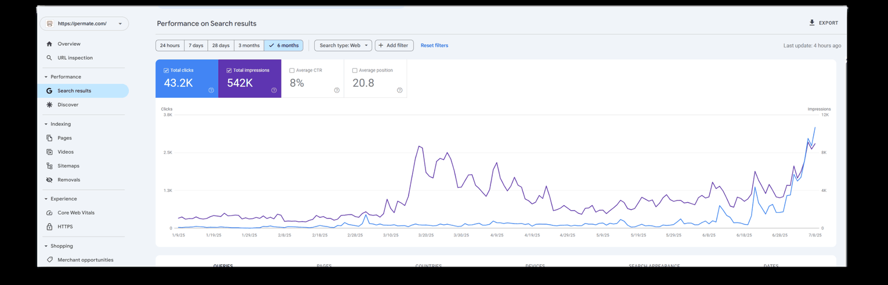

Case note · 04
Permate: a marketplace launched into organic from zero
Aug 2024 – Jul 2025 · Affiliate · Consulting engagement
Consulting engagement. An affiliate marketing platform with no organic footprint, needing both sides of a two-sided marketplace to fill up fast.
At a glance
- Engagement — consulting, Aug 2024 – Jul 2025
- Sector — affiliate marketing, two-sided marketplace
- Market — Vietnam
- Objective — organic visibility, plus partner and publisher acquisition
Headline figures
-
200
Partners onboarded
Permate · within 3 months of launch
-
500
Publishers onboarded
Permate · within 3 months of launch
-
22,339%
Organic click growth
Permate Global · L6M vs P6M
01 — The situation
What was the situation at Permate?
Permate is an affiliate marketing platform. A two-sided marketplace has a hard launch problem: partners will not join without publishers, and publishers will not join without partners. Neither side moves until the other one does.
Organic search is one of the few channels that can work on both sides at once, because the people searching for how affiliate marketing works are the supply, and the brands searching for how to run an affiliate programme are the demand.
02 — The constraint
What was the constraint at launch?
No organic footprint at all at the start. That cuts both ways, and I want to be straight about it before I quote any percentage on this page.
Starting from near zero means the growth rates are enormous and much less meaningful than they look. It also means there was nothing to inherit — no authority, no ranking history, no existing pages doing quiet work in the background. Every result had to be built.
03 — What I did
What did I do?
The organic strategy targeted the head terms that define the category in Vietnamese, with “tiếp thị liên kết” — affiliate marketing — as the primary target. That term is the entry point for both sides of the marketplace, which makes it worth more than its search volume suggests.
Alongside the ranking work, the KPI that actually mattered was marketplace liquidity: onboarding partners on one side and publishers on the other, fast enough that neither side found an empty marketplace when they arrived.
04 — What it produced
What did it produce?
Permate onboarded 200 partners and 500 publishers within three months of launch, and grew organic clicks +22,339% and organic impressions +195,464% comparing the last six months with the previous six. Top ranking for “tiếp thị liên kết” was the stated launch KPI.
| Metric | Result | Comparison |
|---|---|---|
| Partners onboarded | 200 | Within 3 months of launch |
| Publishers onboarded | 500 | Within 3 months of launch |
| Ranking, “tiếp thị liên kết” | Top ranking (stated KPI) | KPI at launch |
| Organic clicks | +22,339% | Last 6 months vs previous 6 |
| Organic impressions | +195,464% | Last 6 months vs previous 6 |
Permate · final 6 months vs the previous 6

05 — What I would do differently
What would I do differently?
I would report absolute clicks next to the percentage from the first month.
I did not misreport anything here — the +22,339% is a correct calculation against a near-zero base. But a percentage that large tells a stakeholder almost nothing, and it invites them to expect the same rate again next period. Leading with absolute numbers and showing the percentage as secondary is the honest way to report an early-stage launch.
I would separate the two sides of the marketplace in reporting from day one.
Partners and publishers are different audiences with different searches and different reasons to sign up. Reporting them against a single organic number makes it harder to tell which side the content was actually serving, and therefore which side to invest the next month in.
06 — Next
What to read next
InApps Technology is the other consulting launch on this site: B2B organic for a mobile app development company, where the only result that counts is a qualified inbound enquiry rather than a traffic line.
Launching something into organic from zero is one of the two engagement shapes I take on. Consulting engagements · Get in touch